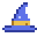
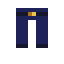
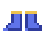
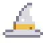
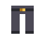
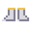

Ferramentas Instáveis, o equipamento de Manilium e o Talismã dos Blocos.

Armadura de Manilium
A armadura de Manilium tem a proteção da netherita e pode ficar ainda mais forte. Vestida, ela tem um modelo 3D de cavaleiro: viseira, bochechas e guarda de nuca no capacete; placa peitoral, cinto largo, saiote de placas, ombreiras de duas camadas, manoplas e uma capa vermelho-escura no peitoral; joelheiras nas calças; cano reforçado e biqueiras nas botas (as molduras pintam junto com a tinta). Todos os itens de Manilium têm bordas cósmicas: um céu de estrelas que se mexe conforme você move a câmera ou o item.
Fortalecer
No Nature Infuser, coloque a peça na entrada e uma Orbe de Mana na alimentação: +1 de defesa por orbe, até +5 em cada peça.
Nature Infuser
em cima: entrada · embaixo: alimentação
Os itens de Manilium não podem mais ser pintados (os que já tinham cor continuam com ela).
Enfeite de Manilium
A Barra de Manilium também é um material de enfeite: na mesa de ferraria, junte qualquer molde de enfeite + qualquer armadura (de ferro, diamante, Elemental, de Mago...) + Barra de Manilium. Cada peça ganha +1 de armadura (+4 com as 4 peças) e o desenho do enfeite fica com o céu cósmico se mexendo, igual às bordas do Manilium.
Conversor de Almas
Qualquer peitoral pode receber um Conversor de Almas embutido no Nature Infuser.

Espada de Manilium
Uma espada que cresce com você e carrega um Bloco Mágico na guarda.
Dano sem limite
Cada Orbe de Mana infundida no Nature Infuser dá +1 de dano, sem limite.
Nature Infuser
em cima: entrada · embaixo: alimentação
Bloco na guarda
Coloque a espada vazia na entrada e um Bloco Mágico na alimentação: o bloco aparece na guarda e a espada passa a usar todas as habilidades dele, além de cortar normalmente. Para tirar o bloco, coloque a espada sozinha na bancada.
Nature Infuser
em cima: entrada · embaixo: alimentação

Armadura de Mago
Uma armadura de pano mágico no estilo de mago: chapéu pontudo de aba larga com faixa dourada e a ponta dobrada para trás, manto longo azul até os pés com gola, abertura e barra douradas, faixa na cintura, mangas largas, calças escuras e sapatos de bico virado. Protege como ferro e é ótima para encantar.



Bancada de trabalho
➜ | Vestindo | A mana volta |
|---|
| 0 peças | 1 de mana a cada 120s |
| 1 peça | a cada ~96s |
| 2 peças | a cada ~72s |
| 3 peças | a cada ~49s |
| 4 peças | 1 de mana a cada 25s |
Feita com Tecido Mágico (as receitas seguem o formato das armaduras normais; o manto leva um Bloco de Lápis no meio). A Sabedoria dos Atributos acelera ainda mais.

Armadura Elemental
A Armadura de Mago melhorada: o mesmo modelo (chapéu, manto, calças e sapatos), com as cores do elemento. Receita: a peça de mago no meio com Diamantes Elementais em volta (chapéu 3, manto 7, calças 6, sapatos 2). Defesa de diamante, durabilidade quase de netherita, 2,5 de resistência e conta como peça de mago para a volta da mana. No Nature Infuser, coloque a peça na entrada e o item do elemento na alimentação para dar um elemento a ela (as cores mudam; dá para trocar depois). Os bônus contam as peças do mesmo elemento vestidas.



Bancada de trabalho
➜ | Elemento | Infusão | 2 peças | 4 peças |
|---|
| Fogo | Pó de Blaze | -40% de dano de fogo | Resistência ao Fogo permanente |
| Água | Cristais de Prismarinho | Respira debaixo d'água | Graça do Golfinho e Poder do Conduto na água |
| Gelo | Gelo Azul | Não congela na neve fofa e não fica lento | Congela a água por onde anda |
| Trovão | Para-raios | Velocidade I | Velocidade II e 30% de chance de dar um choque (4 de dano) em quem te bater |
Peças com elemento também aparecem nos baús da Masmorra Elemental.
Talismã dos Blocos
Um cinto mágico que guarda até 9 Blocos Mágicos. Os blocos guardados giram num círculo atrás de você e o talismã aparece nas costas.
| Ação | Efeito | Mana |
|---|
| Direito com o talismã na mão | Abre o armazenamento (só aceita Blocos Mágicos) | — |
| Equipar | Slot de cinto do Curios (sem o Curios, funciona no inventário) | — |
| Tecla G (mão livre) | Abre a roda de blocos: aponte e clique (ou solte a tecla) para pegar o bloco | — |
| Tirar o bloco da mão | Trocar de slot ou jogar no chão devolve o bloco ao talismã | — |
A tecla pode ser trocada em Opções → Controles → Magic & Blocks.
Rolar para desviar (tecla R)
Com qualquer item (ou mão vazia), aperte R no chão para dar uma cambalhota na direção em que está andando (para frente se estiver parado). Durante a rolagem você fica invulnerável por 0,4s e desvia de qualquer ataque, inclusive dos golens. Recarga de 2 segundos: um ícone ao lado direito da hotbar mostra quando dá para rolar de novo (apagado enquanto recarrega, pisca quando fica pronto). Gasta um pouco de fome. Não funciona na água, voando ou montado.